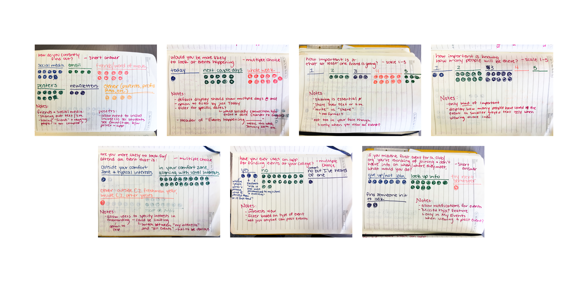
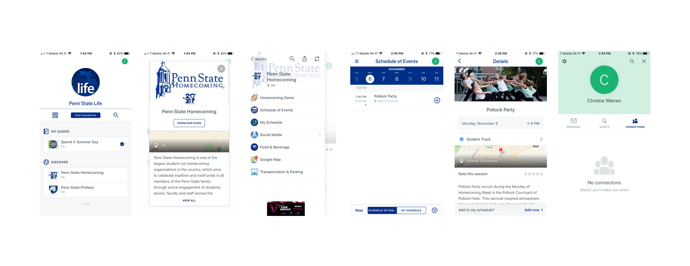
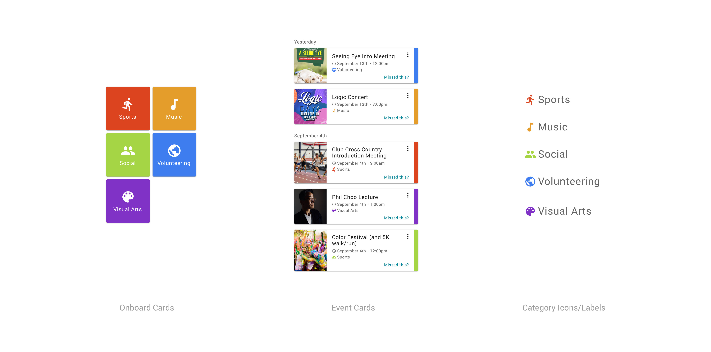
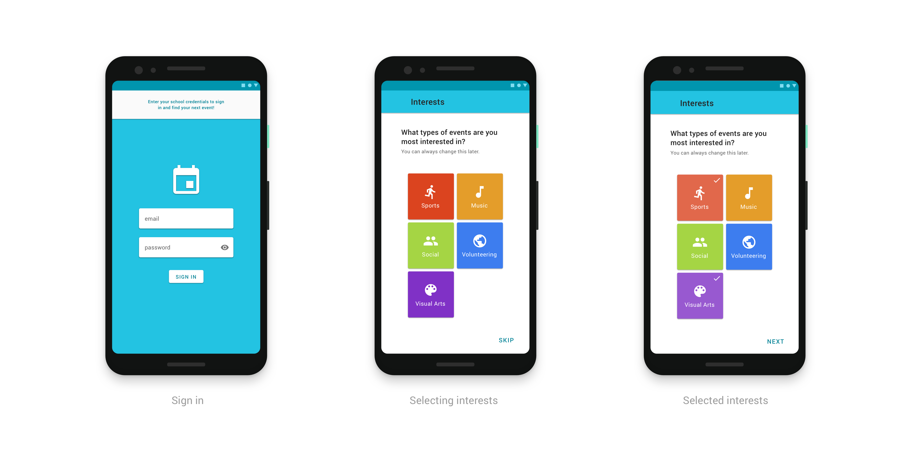
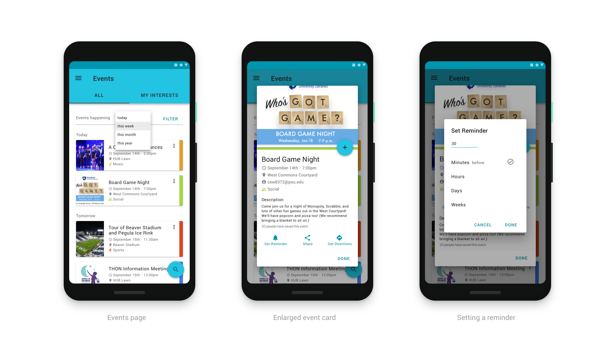

StateCal
A mobile app to help Penn State students easily search, browse, and view details of different types of events related to orientation and the start of the semester.
UI/Visual
UX
Sketch
Material UI
User Research

Context: Google Application Challenge
Week long project
Prompt: Design an experience for students to discover orientation events and craft a visual system to accommodate different types of events: sports, music, visual arts, social groups, and volunteering events. Provide hi-fi mocks for searching, browsing, and viewing the details for these different events.
PROBLEM STATEMENT
There is no organized way for students to discover personalized events only at their college, and when they do hear about events, they have to rely heavily on memory to attend them.
No central event hub.
Students hearing about events often relies on coincidences like seeing a poster or hearing by word of mouth. There is no central place to learn about college events.
Reliance on memory.
Many students hear about events through word of mouth, so they rely on their memory to attend those events, and this is a lot to ask of a student at the start of a semester.
Missing first meetings.
Students are significantly less likely to join a club if they miss the first event, so it's a problem that there is no reminder system in place.
User
Event Browser
This college student is interested in attending events at the start of the year to decide what they should be involved with. They'd like to be able to browse events and get reminders for the ones they decide to attend, but not have to sort through ones they aren't interested in.
Needs
Goals
Browse Personalized Events
Provide a browsing experience tailored to each students' specified interests, while also not completely hiding events outside those interests.
Help Students Remember Events
Enable students to set reminders for events of interest, rather than them having to keep track of times and dates.
Assist with Missed Meetings
Providing a way to contact club leadership would encourage students to seek information after missing an event, rather than abandon the interest.
user research

Survey Summary
Find out about events mainly through friends/word of mouth, posters, and social media
No app commonly used
Look for events in their comfort zone and will look further ahead than today
Care whether at least one of their friends will be there
A third would give up on joining the club entirely after missing the first meeting
Competitive Analysis: Penn State Life
The only similar app around Penn State events is catered mainly to parents and alumni, providing extensive guides to large events like Homecoming. There is a Student Track, but it provides very few events, and the flow is generally quite confusing.

process & progression

Visual System
This system emphasizes different interests through both color and icons, enforcing the goal of providing a personalized experience based around users' specific interests. Icons also aim to make the system more accessible, not relying solely on colors.

Features
Onboarding
Students choose which types of events interest them, creating a customized feed of events.


Event Browsing
Choose to browse all events or only events in previously indicated interests. This allows for personalization without making
other events unaccessible.
Users can also set reminders for any event to remove the pressure of remembering details.
Saved Events
Save events of interest to return to later. Past or present saved events can be viewed, and a "Missed this event?" option in past events directs to the best way to contact the event leader.